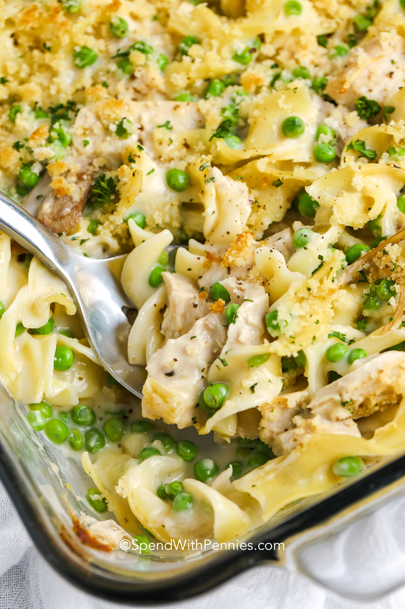

Chicken Noodle Casserole

A cozy creamy casserole with chicken, egg noodles, and green
peas is smothered in a creamy sauce and baked until bubbly.
Ingredients:
Keep the basics like cream of chicken soup and the meat, but feel free to substitute the add
-ins depending on what you have on hand!
- Pasta – Try substituting any medium pasta like fusilli, penne, or even tortellini for the egg noodles.
- Chicken – I use either rotisserie or leftover cooked chicken in used in this recipe. Try
substituting diced ham or leftover turkey for a new dish.
- Veggies– Add any frozen veggies to the mix. Frozen peas, carrots, or broccoli all are great choices.
- Sauce– To keep this meal quick, the sauce is made with cream of chicken soup but I have
included a “from scratch” version in the notes of the recipe too.
- Variations– Shredded mozzarella cheese instead of cheddar cheese adds a new flavor twist!
For some extra kick try adding Monterey or pepper jack. Try using crushed ritz crackers
instead of panko bread crumbs in the topping.
Steps:
- Boil noodles in a large pot until al-dente.
- Combine all ingredients in a casserole dish per the recipe below.
- Sprinkle on toppings and bake until golden brown and bubbly.